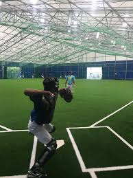

☆CKGドーム
ダイヤモンドが埋まる広々といたスペース。天候に左右されることなく練習をすることができます。
練習場では、内野ノックやゲージを使ってのバッティング練習などの数多くの練習メニューをすることが可能です。
バッティング練習では、最高4ヵ所の打撃練習や、最高20ヶ所も同時でティーバッティング練習をすることが可能です。
ブルペンでは5ヶ所同時での投げ込みをすることが出来ます。
こちらも天候に左右されることはなく、投げ込み練習をすることができます。
ブルペンではバッターボックスも設けられております。打者を立たせる事も出来、打者を想定したピッチング練習をすることができます。

CKGドーム